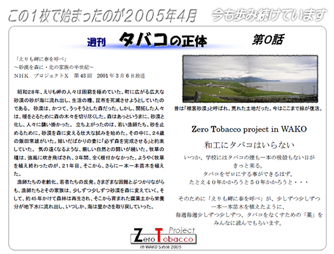

TOP ＞＞ タバコの正体
タバコの正体
和工の喫煙防止教育について
| Vol | 話 数 | 期 間 |
|---|---|---|
| Vol.01 | １５話 | 2005.04.07 〜 2005.07.20 |
| Vol.02 | １６話 | 2005.09.07 〜 2005.12.21 |
| Vol.03 | １１話 | 2006.01.11 〜 2006.03.22 |
| Vol.04 | １４話 | 2006.04.18 〜 2006.07.19 |
| Vol.05 | １６話 | 2006.09.06 〜 2006.12.20 |
| Vol.06 | １１話 | 2007.01.10 〜 2007.03.23 |
| Vol.07 | １４話 | 2007.04.18 〜 2007.07.18 |
| Vol.08 | １６話 | 2007.09.05 〜 2007.12.19 |
| Vol.09 | １１話 | 2008.01.09 〜 2008.03.19 |
| Vol.10 | １４話 | 2008.04.14 〜 2008.07.16 |
| Vol.11 | １８話 | 2008.08.27 〜 2008.12.24 |
| Vol.12 | １０話 | 2009.01.13 〜 2009.03.17 |
| Vol.13 | １４話 | 2009.04.15 〜 2009.07.15 |
| Vol.14 | １７話 | 2009.09.02 〜 2009.12.22 |
| Vol.15 | １１話 | 2010.01.14 〜 2010.03.24 |
| Vol.16 | １４話 | 2010.04.14 〜 2010.07.16 |
| Vol.17 | １７話 | 2010.09.01 〜 2010.12.22 |
| Vol.18 | １１話 | 2011.01.13 〜 2011.03.24 |
| Vol.19 | １５話 | 2011.04.13 〜 2011.07.20 |
| Vol.20 | １７話 | 2011.08.31 〜 2011.12.21 |
| Vol.21 | １１話 | 2012.01.11 〜 2012.03.23 |
| Vol.22 | １５話 | 2012.04.11 〜 2012.07.18 |
| Vol.23 | １７話 | 2012.08.29 〜 2012.12.19 |
| Vol.24 | １１話 | 2013.01.09 〜 2013.03.22 |
| Vol.25 | １５話 | 2013.04.10 〜 2013.07.17 |
| Vol.26 | １７話 | 2013.08.28 〜 2013.12.18 |
| Vol.27 | １１話 | 2014.01.08 〜 2014.03.24 |
| Vol.28 | １５話 | 2014.04.09 〜 2014.07.16 |
| Vol.29 | １７話 | 2014.08.27 〜 2014.12.17 |
| Vol.30 | １１話 | 2015.01.07 〜 2015.03.18 |
| Vol.31 | １３話 | 2015.04.22 〜 2015.07.16 |
| Vol.32 | １７話 | 2015.08.26 〜 2015.12.16 |
| Vol.33 | １０話 | 2016.01.13 〜 2016.03.16 |
| Vol.34 | １４話 | 2016.04.18 〜 2016.07.13 |
| Vol.35 | １７話 | 2016.08.31 〜 2016.12.21 |
| Vol.36 | １０話 | 2017.01.11 〜 2017.03.14 |
| Vol.37 | １４話 | 2017.04.19 〜 2017.07.19 |
| Vol.38 | １７話 | 2017.08.30 〜 2017.12.20 |
| Vol.39 | １０話 | 2018.01.09 〜 2018.03.13 |
| Vol.40 | １４話 | 2018.04.18 〜 2018.07.18 |
| Vol.41 | １７話 | 2018.08.29 〜 2018.12.19 |
| Vol.42 | １０話 | 2019.01.09 〜 2019.03.13 |
| Vol.43 | １３話 | 2019.04.17 〜 2019.07.17 |
| Vol.44 | １７話 | 2019.08.28 〜 2019.12.18 |
| Vol.45 | ７話 | 2020.01.15 〜 2020.02.26 |
| Vol.46 | １１話 | 2020.05.27 〜 2020.08.05 |
| Vol.47 | １９話 | 2020.08.19 〜 2020.12.16 |
| Vol.48 | １０話 | 2021.01.13 〜 2021.03.17 |
| Vol.49 | １３話 | 2021.04.21 〜 2021.07.24 |
| Vol.50 | １６話 | 2021.09.08 〜 2021.12.22 |
| Vol.51 | １０話 | 2022.01.22 〜 2022.03.16 |
| Vol.52 | １４話 | 2022.04.20 〜 2022.07.20 |